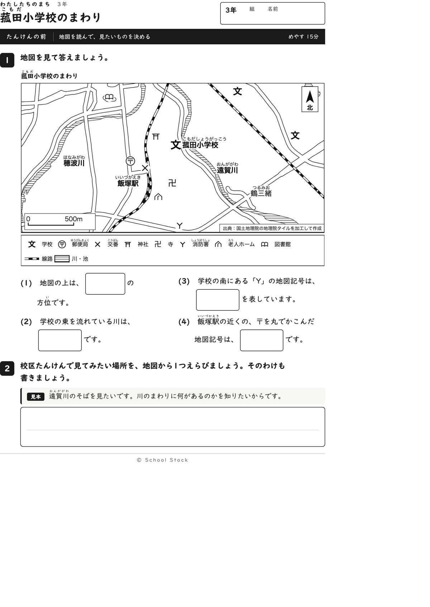
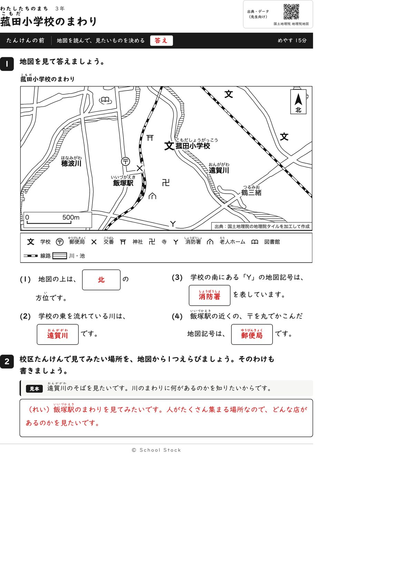
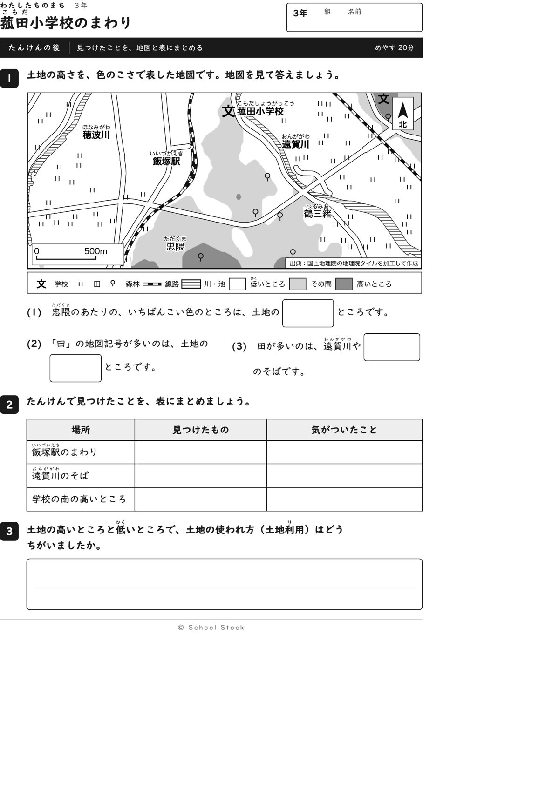
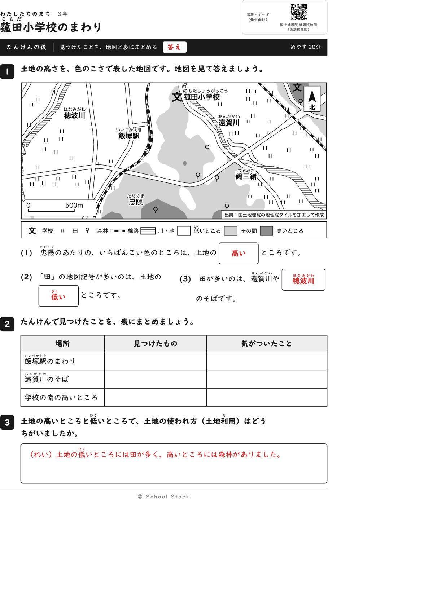
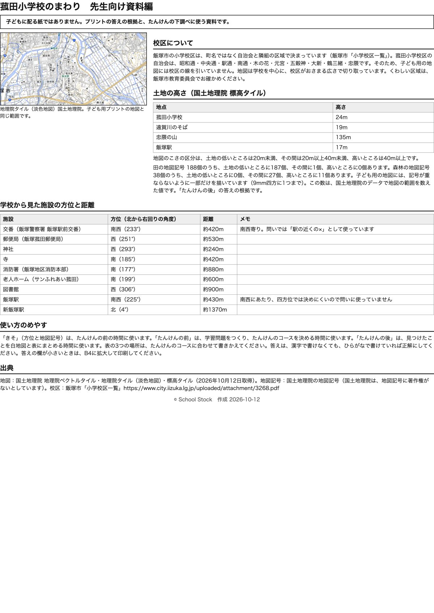

紙





直すところ
直すところはありません。
専門家団の声（いまの紙を見て）
香月八重筆頭・全学年
方位、地図記号、土地の高さの順は教科書の範囲に収まっています。この紙でつかむことは、記号と方位を使うと、まちの様子が地図から読める、と1文で言えます。方位の答えは北だけで、ほかの問いの文には出ていません。
日隈耕平社会
学校の東の遠賀川、南のY（消防署）、駅の近くの郵便局の記号は地図と合っています。田188個のうち187個が低いところで、資料編の数と問いの答えが一致しています。地図の文字は、ほかの文字や記号と重なっていません。縮尺の箱も、ほかの学校の記号から離れています。なお、交番の×印は白い縁で線路を切っていますが、駅の近くにあるのは事実どおりで、読むのに困りません。
藤川湊すぐ終わる子
問いは4つともすぐ終わります。2の見本で書き方も分かります。終わったあとの一言が紙面にないので、早く終わった子には先生の声かけがほしいところです。
田淵さくら例がないと止まる子
前の紙は見本があり、1問目が北でできるので動けます。たんけんの後の3は、鯰田小と立岩小には見本の枠があるのに、この紙にはありません。表の最初のマスにも例がないので、1行だけ例があると安心です。
轟大和読む前に諦める子
問いの文が短く、答えの箱が文の中にあって読みやすいです。たんけんの後の表と3は書く量が多く手が止まりそうですが、3の書き出しが分かれば写して始められます。ほかの2校区と同じ見本が付くと助かります。